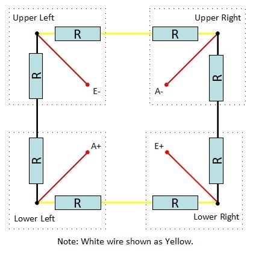

|
MD_HX711 Library 1.0
Library to interface HX711 Weigh Scales Module
|
|
MD_HX711 Library 1.0
Library to interface HX711 Weigh Scales Module
|
The HX711 is a precision 24-bit Analog to Digital Converter (ADC) designed for weigh scales and industrial control applications. It interfaces directly with a Wheatstone Bridge sensor.
Channel A differential input is designed to interface with a bridge sensor's differential output. It can be programmed with a gain of 128 or 64. Large gains are needed to accommodate the small output signal from the sensor. When a 5V supply is used for the sensor, these gains correspond to a full-scale differential input voltage of +/-20mV or +/-40mV respectively.
Channel B differential input has a fixed gain of 32. The full-scale input voltage range is +/-80mV with a 5V power supply.
Each load cell has four strain gauges connected in a Wheatstone Bridge formation. The labeled colors correspond to the color coding convention coding of load cells. Red, black, green and white wires are connected to the load cell's strain gauge and yellow is an optional ground or shield wire to lessen EMI.
The direction of the force arrow labels on your load cells must match the direction of resultant force in your application. So if your resultant force is straight down, then the load cells must be installed so that their force arrow labels are also pointing straight down.
Strain gauge load cells are commonly used on the corners of bathroom scales (and similar applications). Each load cell is a half Wheatstone bridge, as shown below.
This type of load cell must be connected into a circuit that creates the full Wheatstone bridge formation, with each leg made up of a strain resistor from two of the strain gauge load cells.

A simple way to do this is to create a Combinator Board where the wires from the individual strain gauge cells are combined in a 'hub' arrangement to produce the normal 4 Wheatstone Bridge connections.
The HX711 module is used to get measurable data out of a load cell and strain gauge. Load cells come in various shapes and are rated from 0.1kg to over 1000kg full scale.
The HX711 module's A channel interfaces to the load cell through four wires labeled E+ (or RED), E- (BLK), A-(WHT), A+(GRN), and an optional shielding ground SD(YLW) on the circuit board.
The B Channel interfaces to a separate load cell through the E+, E- (shared with Channel A) and B+, B- connections on the circuit board.
E+ and E- are essentially the positive voltage and ground connections to load cell; the A+/A-, B+/B- the differential outputs from the load cell.
The module is connected to the processor's power supply (Vcc and GND) and 2 additional processor digital input pins DAT (or DT) and CLK (or SCK). These digital pins are used to manage the limited configuration options available and read the data from the HX711. DAT and CLK are arbitrary and nominated to the library when the HX711 object is instantiated.